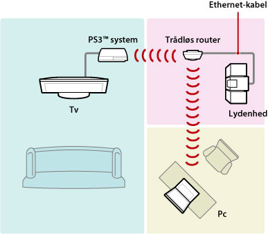
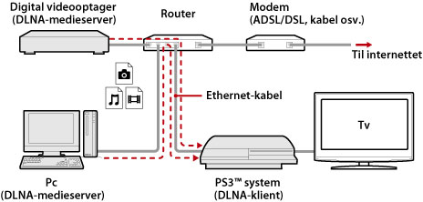
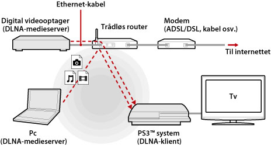
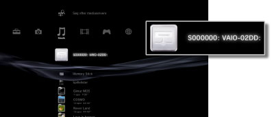
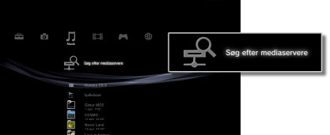

Indstillinger > Netværksindstillinger > Mediaserverforbindelse
Mediaserverforbindelse
Gør det muligt at justere indstillinger for oprettelse af forbindelse til enheder, der understøtter DLNA.
| Aktivere | Vælg denne indstilling for at aktivere en forbindelse til enheder, der understøtter DLNA. |
|---|---|
| Deaktivere | Vælg denne indstilling for at deaktivere en forbindelse til enheder, der understøtter DLNA. |
Om DLNA
DLNA (Digital Living Network Alliance) er en standard, der gør det muligt at slutte digitale enheder, f.eks. pc'er, digitale videooptagere og tv, til et netværk og dele data, der ligger på andre tilsluttede DLNA-kompatible enheder.
DLNA-kompatible enheder har to funktioner. "Servere" distribuerer medier, f.eks. billed-, musik- eller videofiler, og "klienter" modtager og afspiller medierne. Nogle enheder kan udføre begge funktioner. Du kan bruge et PS3™ system som klient til at få vist billeder eller afspille musik- eller videofiler, der ligger på en netværkstilsluttet enhed, der understøtter funktionen DLNA-medieserver.

Tilslutning af dit PS3™ system og en DLNA-medieserver
Dit PS3™ system og en DLNA-medieserver kan tilsluttes med kabler eller trådløst.
Eksempel på kabeltilslutning af en pc

Eksempel på trådløs tilslutning af en pc

Konfigurering af en DLNA-medieserver
Konfigurer DLNA-medieserveren, så den kan bruges af dit PS3™ system. Følgende enheder kan bruges som DLNA-medieservere.
- Enheder, der understøtter DLNA-standarden, herunder produkter fra andre virksomheder end Sony
- Pc'er, der har installeret Windows Media® Player 11
Når en AV-enhed bruges som DLNA-medieserver
Aktiver DLNA-medieserverfunktionen på den tilsluttede enhed, så dens indhold kan deles. Konfigureringsmetoden varierer, afhængigt af den tilsluttede enhed. Yderligere oplysninger findes i de vejledninger, der fulgte med enheden.
Når DLNA-medieserveren er en pc med Microsoft® Windows®
Du kan bruge en pc med Microsoft® Windows® som DLNA-medieserver via funktioner i Windows Media® Player 11.
1. |
Start Windows Media® Player 11. |
|---|---|
2. |
Vælg [Mediedeling] i menuen [Bibliotek]. |
3. |
Marker afkrydsningsfeltet [Del mine medier]. |
4. |
Gå til listen under afkrydsningsfeltet [Del mine medier med:], og vælg de enheder, som du vil dele data med, og klik derefter på [Tillad]. |
5. |
Klik på [OK]. |
Tips
- Windows Media® Player 11 er ikke installeret som standard på pc'er med Microsoft® Windows®. Du skal downloade installationsprogrammet fra Microsoft®-webstedet for at installere Windows Media® Player 11.
- Yderligere oplysninger om brug af Windows Media® Player 11 findes under Hjælp i Windows Media® Player 11.
- I nogle tilfælde kan der være installeret original DLNA-medieserversoftware på pc'en. Yderligere oplysninger findes i de vejledninger, der fulgte med computeren.
Afspilning af DLNA-medieserverindhold
Når du tænder dit PS3™ system, registreres der automatisk DLNA-medieservere på samme netværk, og ikonerne for de registrerede servere vises under  (Foto),
(Foto),  (Musik) og
(Musik) og  (Video).
(Video).
1. |
Vælg ikonet for den DLNA-medieserver, som du vil oprette forbindelse til, under  |
|---|---|
2. |
Vælg den fil, der skal afspilles. |
Tips
- Dit PS3™ system skal være sluttet til et netværk. Yderligere oplysninger om netværksindstillinger findes i denne vejledning under
 (Indstillinger) >
(Indstillinger) >  (Netværksindstillinger) > [Indstillinger til Internetforbindelse].
(Netværksindstillinger) > [Indstillinger til Internetforbindelse]. - Når metoden til allokering af IP-adresser er blevet ændret fra AutoIP til DHCP under indstillingerne for netværket, skal du udføre en anden søgning efter servere under
 (Søg efter mediaservere).
(Søg efter mediaservere). - Ikonet for DLNA-medieserver vises kun, når [Mediaserverforbindelse] er aktiveret under (Indstillinger) > (Netværksindstillinger).
- Tilgængelige mappenavne afhænger af DLNA-medieserveren.
- Afhængigt af DLNA-medieserveren kan nogle filer muligvis ikke afspilles, eller tilgængelige handlinger under afspilning kan være begrænsede.
- Du kan ikke afspille copyrightbeskyttet indhold.
- Filnavne på data, der er gemt på ikke-DLNA-kompatible servere, vises muligvis med en stjerne i filnavnet. Sådanne filer kan ikke altid afspilles på dit PS3™ system. Selvom filerne kan afspilles på dit PS3™ system, er det ikke sikkert, at de kan afspilles på andre enheder.
Manuel søgning efter DLNA-medieservere
Du kan starte en søgning efter DLNA-medieservere, der er tilsluttet samme netværk. Denne funktion kan bruges, hvis der ikke registreres nogen DLNA-medieservere, når dit PS3™ system er tændt.
Vælg (Søg efter mediaservere) under (Foto), (Musik) eller (Video). Når søgeresultaterne vises, og du skifter til XMB™, får du vist en liste over DLNA-medieservere, der kan oprettes forbindelse til.

Tip
Ikonet (Søg efter mediaservere) vises kun, når [Mediaserverforbindelse] er aktiveret i (Netværksindstillinger) under (Indstillinger).